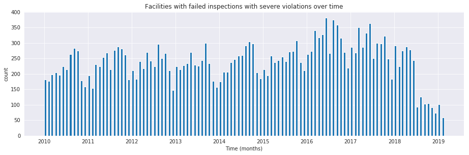

Data preparation#
We need to get the data and transform it into a shape that is suitable for the analysis.
NOTE: Unless we say otherwise, you should run all the following commands inside bastion.
Load the data#
Before loading the data into the database, verify that the database table is empty by running the following code:
select
count(*)
from
raw.inspections;
| count |
|---|
| 0 |
We will use some postgresql magic in order to get the data in our
database. In particular we will use the powerful
copy command and
the City of Chicago's data API:
\copy raw.inspections from program 'curl "https://data.cityofchicago.org/api/views/4ijn-s7e5/rows.csv?accessType=DOWNLOAD"' HEADER CSV
Now, you should have some data:
select
to_char(count(*), '999,999') as "facilities inspected"
from
raw.inspections;
| facilities inspected |
|---|
| 186,426 |
You'll probably get a different number because the data are updated every day. Let's peek inside the table1
select
inspection,
dba_name,
risk,
results
from
raw.inspections limit 1;
| inspection | dba_name | risk | results |
|---|---|---|---|
| 2268241 | ANTOJITOS PUEBLITA INC | Risk 1 (High) | Pass w/ Conditions |
Ok, now you have some data loaded! But we still need to munge it to use it in our machine learning task.
Transforming (and cleaning) the data#
Rationale#
To tackle a machine learning problem, you need to identify the entities for your problem domain. Also, if your problem involves time, you will need to understand how those entities change, either what events happen to the entity or what events the entity affects.
We will encode this information into two tables, one named entities
and the other named events.
The entity, in this example, is the food facility, and the events are the inspections on the facility.
The entities table should contain a unique identifier for the entity
and some data about that entity (like name, age and status). The events
table will include data related to the inspection, including the two
most important attributes: its spatial and temporal positions 2.
Before we start the data cleaning, make your life easier by following this rule:
Important
Do not change the original data
The reason is, if you make a mistake or want to try a different data
transformation, you can always can go back to the raw data and start
over.
Data road#
The transformation "road" that we will take in this tutorial is as follows:
- Put a copy of the data in the
rawschema. (We just did that.) - Apply some simple transformations and store the resulting data in the
cleanedschema. - Organize the data into two unnormalized3 tables in the
semantic schema:
eventsandentities. - Run
triage. It will create several schemas (triage_metadata,test_results,train_results).

Dataset documentation#
Info
For an updated version of the documentation of this dataset see Food Protection Services.
Info
The Food Code Rules (effective 2/1/2019) could be consulted here.
The Chicago Food Inspection dataset has documentation here.
We can use this documentation to better understand each column's meaning, and the process that generates the data.
Most columns are self-explanatory, but some are not4:
Risk category of facility (risk)
Each establishment is categorized by its risk of adversely affecting the public’s health, with 1 being the highest and 3 the lowest. The frequency of inspection is tied to this risk, with risk = 1 establishments inspected most frequently and risk = 3 least frequently.
Inspection type (type)
An inspection can be one of the following types:
- Canvass, the most common type of inspection performed at a frequency relative to the risk of the establishment;
- Consultation, when the inspection is done at the request of the owner prior to the opening of the establishment;
- Complaint, when the inspection is done in response to a complaint against the establishment
- License, when the inspection is done as a requirement for the establishment to receive its license to operate;
- Suspect food poisoning, when the inspection is done in response to one or more persons claiming to have gotten ill as a result of eating at the establishment (a specific type of complaint-based inspection);
- Task-force inspection, when an inspection of a bar or tavern is done.
- Re-inspections can occur for most types of these inspections and are indicated as such.
Results (results)
An inspection can pass, pass with conditions, or fail. Establishments receiving a ‘pass’ were found to have no critical or serious violations (violation number 1-14 and 15-29, respectively). Establishments receiving a ‘pass with conditions’ were found to have critical or serious violations, but these were corrected during the inspection. Establishments receiving a ‘fail’ were found to have critical or serious violations that were not correctable during the inspection. An establishment receiving a ‘fail’ does not necessarily mean the establishment’s licensed is suspended. Establishments found to be out of business or not located are indicated as such.
Important!
The result of the inspections (pass, pass with conditions or fail) as well as the violations noted are based on the findings identified and reported by the inspector at the time of the inspection, and may not reflect the findings noted at other times.
Violations (violations)
An establishment can receive one or more of 45 distinct violations (violation numbers 1-44 and 70). For each violation number listed for a given establishment, the requirement the establishment must meet in order for it to NOT receive a violation is noted, followed by a specific description of the findings that caused the violation to be issued.
Data Changes
On 7/1/2018 the Chicago Department of Public Health’s Food Protection unit changed the definition of violations. The changes don’t affect structurally the dataset (e.g. how the violations are inputted to the database), but the redefinition will change the distribution and interpretation of the violation codes. See here.
Data Changes
On 2/1/2019 the Chicago Department of Public Health’s Food Protection unit changed the requirements that the facilities must follow. See here
We added emphasis to the last one.
From these definitions, we can infer the following:
- risk is related to the frequency of inspections of type canvass.
- consultation is an inspection before the facility opens (so we can remove it from the data). The same happens with license.
- complaint and suspected food poisoning are triggered by people.
- consultation is triggered by the owner of the facility.
- task-force occurs at bars or taverns.
- Critical violations are coded between
1-14, serious violations between15-29. We can assume that the violations code30and higher are minor violations. (see below) - violation describes the problems found, and the comment section describes the steps the facility should take to fix the problem.
- There are only three possible results of the inspection. (Also, an inspection may not happen if the facility was not located or went out of business).
- There can be several
violationsperinspection.
Data Changes
On 7/1/2018 Critical violation changed to Priority (P) Violation, Serious violation changed to Priority Foundation (PF) Violation and Minor violation changed to Core (C) Violation.
Data Changes
On 7/1/2018 the number of potential violations has increased from 45 to 63.
Data Changes
On 7/1/2018 Corrected Dduring Inspection (CDI) has been changed to Corrected on Site (COS). Potentially Hazardous Foods (PHF) changed to Time/Temperature Control for Safety Foods (TCS Foods).
Reality check#
It is important to verify that the documentation is correct. Let's start by checking that the risk column only has three classifications:
NOTE Execute this in psql inside the container bastion.
select
risk,
to_char(count(*), '999,999') as "number of inspections"
from
raw.inspections
group by
risk
order by
count(*) desc;
| risk | number of inspections |
|---|---|
| Risk 1 (High) | 133,170 |
| Risk 2 (Medium) | 36,597 |
| Risk 3 (Low) | 16,556 |
| ¤ | 75 |
| All | 28 |
Ok, there are two extra risk types, All and NULL, for a grand total of 5.
What about types of inspections?
select
count(distinct type) as "types of inspections"
from
raw.inspections;
| types of inspections |
|---|
| 108 |
Wow, there are 108 types of inspections instead of the expected 5!
What are those types? How bad is it?
select
type,
to_char(count(*), '999,999') as "number of inspections"
from
raw.inspections
group by
type
order by
count(*) desc
limit 10;
| type | number of inspections |
|---|---|
| Canvass | 99,792 |
| License | 24,385 |
| Canvass Re-Inspection | 19,380 |
| Complaint | 17,289 |
| License Re-Inspection | 8,572 |
| Complaint Re-Inspection | 7,060 |
| Short Form Complaint | 6,534 |
| Suspected Food Poisoning | 834 |
| Consultation | 671 |
| License-Task Force | 605 |
This column will require also cleaning.
Finally, let's look results (should be 3)
select
results,
to_char(count(*), '999,999') as "number of inspections"
from
raw.inspections
group by
results
order by
count(*) desc;
| results | number of inspections |
|---|---|
| Pass | 103,528 |
| Fail | 35,948 |
| Pass w/ Conditions | 23,258 |
| Out of Business | 16,212 |
| No Entry | 5,784 |
| Not Ready | 1,630 |
| Business Not Located | 66 |
Ok, disheartening. But that's the reality of real data. We'll try to clean this mess.
Cleaning#
Let's look at the data to figure out how we need to transform
it. We'll start with all the columns except violations. We'll deal
with that one later because it's more complex.
First, we'll remove superfluous spaces; convert the columns type,
results, dba_name, aka_name, facility_type, address, city to lower
case; and clean risk, keeping only the description (e.g. high
instead of Risk 1 (High)).
We still need to clean further the column type (which contains more
values than the seven mentioned in the documentation: canvass,
complaint, license, re-inspection, task-force, consultation,
and suspected food poisoning). For simplicity, we will use regular
expressions and ignore re-inspection.
For the column risk, we will impute as high all the NULL and All values5.
As we have seen (and will continue see) through this tutorial, real
data are messy; for example, the column dba_name has several
spellings for the same thing: SUBWAY and Subway, MCDONALDS and
MC DONALD'S, DUNKIN DONUTS/BASKIN ROBBINS and DUNKIN DONUTS /
BASKIN ROBBINS, etc.
We could use
soundex
or machine learning deduplication6 to clean these names, but
we'll go with a very simple cleaning strategy: convert all the names
to lowercase, remove the trailing spaces, remove the apostrophe, and
remove the spaces around "/". It won't completely clean those names,
but it's good enough for this example project.
Let's review the status of the spatial columns (state, city, zip,
latitude, longitude). Beginning with state, all the facilities in
the data should be located in Illinois:
select
state,
to_char(count(*), '999,999') as "number of inspections"
from
raw.inspections
group by
state;
| state | number of inspections |
|---|---|
| IL | 186,392 |
| ¤ | 34 |
Ok, almost correct, there are some NULL values. We will assume that the NULL values are actually IL (i.e. we will impute them). Moving to the next spatial column, we expect that all the values in the column city are Chicago7:
select
lower(city) as city,
to_char(count(*), '999,999') as "number of inspections"
from
raw.inspections
group by
lower(city)
order by
count(*) desc
limit 10;
| city | number of inspections |
|---|---|
| chicago | 186,009 |
| ¤ | 161 |
| cchicago | 44 |
| schaumburg | 23 |
| maywood | 16 |
| elk grove village | 13 |
| evanston | 10 |
| chestnut street | 9 |
| cicero | 9 |
| inactive | 8 |
Oh boy. There are 150-ish rows with NULL values and forty-ish rows
with the value cchicago. Farther down the list (if you dare), we
even have chicagochicago. All the values are near Chicago, even if
they're in different counties, so we will ignore this column (or
equivalently, we will assume that all the records are from Chicago).
Zip code has a similar NULL problem:
select
count(*) as "number of inspections w/o zip code"
from
raw.inspections
where
zip is null or btrim(zip) = '';
| number of inspections w/o zip code |
|---|
| 75 |
We could attempt to replace these NULL values using the location
point or using similar names of restaurants, but for this tutorial we
will remove them. Also, we will convert the coordinates latitude and
longitude to a Postgres Point8910.
We will drop the columns state, latitude, and longitude because
the Point contains all that information. We also will remove the
column city because almost everything happens in Chicago.
If you're keeping count, we are only keeping two columns related to
the spatial location of the events: the location of the facility
(location) and one related to inspection assignments (zip_code).
Additionally, we will keep the columns wards, historical_wards,
census_tracts and community_areas.
Each inspection can have multiple violations. To handle that as simply as possible, we'll put violations in their own table.
Decisions regarding data
We will inspections that occurred before 2018-07-01. This is
due the changes in the types and definition of the violations. See
here
Finally, we will improve the names of the columns (e.g. results ->
result, dba_name -> facility, etc).
We will create a new schema called cleaned. The objective of this
schema is twofold: to keep our raw data as is11 and to store our
assumptions and cleaning decisions separate from the raw data in a
schema that semantically transmits that "this is our cleaned data."
The cleaned schema will contain two tables: cleaned.inspections and cleaned.violations.
create schema if not exists cleaned;
Then, we will create our mini ETL with our cleaning decisions:
Data changes
At least from May 2019 the dataset contains news columns:
zip_codes, historical_wards, wards, community_areas and census_tracts. The most
recent code reflects those changes.
create schema if not exists cleaned;
drop table if exists cleaned.inspections cascade;
create table cleaned.inspections as (
with cleaned as (
select
inspection::integer,
btrim(lower(results)) as result,
license_num::integer,
btrim(lower(dba_name)) as facility,
btrim(lower(aka_name)) as facility_aka,
case when
facility_type is null then 'unknown'
else btrim(lower(facility_type))
end as facility_type,
lower(substring(risk from '\((.+)\)')) as risk,
btrim(lower(address)) as address,
zip as zip_code,
community_areas as community_area,
census_tracts as census_tracts,
historical_wards as historical_ward,
wards as ward,
substring(
btrim(lower(regexp_replace(type, 'liquor', 'task force', 'gi')))
from 'canvass|task force|complaint|food poisoning|consultation|license|tag removal') as type,
date,
-- point(longitude, latitude) as location
ST_SetSRID(ST_MakePoint(longitude, latitude), 4326)::geography as location -- We use geography so the measurements are in meters
from raw.inspections
where zip is not null -- removing NULL zip codes
and date < '2018-07-01'
)
select * from cleaned where type is not null
);
The number of inspections now is:
select
to_char(count(inspection), '999,999,999') as "number of
inspections (until 07/01/2018)"
from cleaned.inspections;
| number of inspections (until 07/01/2018) |
|---|
| 172,052 |
Note that quantity is smaller than the one from raw.inspections,
since we throw away some inspections.
With the cleaned.inspections table created, let's take a closer look
at the violations column to figure out how to clean it.
The first thing to note is that the column violation has a lot of
information: it describes the code violation, what's required to
address it (see Dataset documentation), and
the inspector's comments. The comments are free text, which means that
they can contain line breaks, mispellings, etc. In particular, note
that pipes (|) seperate multiple violations.
The following sql code removes line breaks and multiple spaces and creates an array with all the violations for inspection number 2145736:
select
unnest(string_to_array(regexp_replace(violations, '[\n\r]+', ' ', 'g' ), '|')) as violations_array
from raw.inspections
where
inspection = '2145736';
| violationsarray |
|---|
| 32. FOOD AND NON-FOOD CONTACT SURFACES PROPERLY DESIGNED, CONSTRUCTED AND MAINTAINED - Comments: FIRST FLOOR GIRL'S WASHROOM,MIDDLE WASHBOWL SINK FAUCET NOT IN GOOD REPAIR, MUST REPAIR AND MAINTAIN. ONE OUT OF TWO HAND DRYER NOT WORKING IN THE FOLLOWING WASHROOM: FIRST FLOOR BOY'S AND GIRL'S WASHROOM, AND BOY'S AND GIRL'S WASHROOM 2ND FLOOR. MUST REPAIR AND MAINTAIN. |
| 34. FLOORS: CONSTRUCTED PER CODE, CLEANED, GOOD REPAIR, COVING INSTALLED, DUST-LESS CLEANING METHODS USED - Comments: DAMAGED FLOOR INSIDE THE BOY'S AND GIRL'S WASHROOM 2ND FLOOR. MUST REPAIR, MAKE THE FLOOR SMOOTH EASILY CLEANABLE. |
| 35. WALLS, CEILINGS, ATTACHED EQUIPMENT CONSTRUCTED PER CODE: GOOD REPAIR, SURFACES CLEAN AND DUST-LESS CLEANING METHODS - Comments: MISSING PART OF THE COVING(BASEBOARD) BY THE EXPOSED HAND SINK IN THE KITCHEN. MUST REPAIR AND MAINTAIN. WATER STAINED CEILING TILES IN THE LUNCH ROOM. MUST REPLACE CEILING TILES AND MAINTAIN. PEELING PAINT ON THE CEILING AND WALLS THROUGHOUT THE SCHOOL. HALLWAYS, INSIDE THE CLASSROOMS, INSIDE THE WASHROOMS IN ALL FLOORS. INSTRUCTED TO SCRAPE PEELING PAINT AND RE PAINT. |
This little piece of code is doing a lot: first it replaces all the line breaks [\n\r]+ with spaces, then, it splits the string using the pipe and stores it in an array (string_to_array), finally it returns every violation description in a row (unnest).
From this, we can learn that the structure of the violations column follows:
- If there are several violations reported, those violations will be separated by
'|' - Every violation begins with a code and a description
- Every violation can have comments, which appear after the string
- Comments:
We will create a new table called cleaned.violations to store
- inspection
- code
- description
- comments
drop table if exists cleaned.violations cascade;
create table cleaned.violations as (
select
inspection::integer,
license_num::integer,
date::date,
btrim(tuple[1]) as code,
lower(btrim(tuple[2])) as description,
lower(btrim(tuple[3])) as comment,
(case
when btrim(tuple[1]) = '' then NULL
when btrim(tuple[1])::int between 1 and 14 then 'critical' -- From the documentation
when btrim(tuple[1])::int between 15 and 29 then 'serious'
else 'minor'
end
) as severity from
(
select
inspection,
license_num,
date,
regexp_split_to_array( -- Create an array we will split the code, description, comment
regexp_split_to_table( -- Create a row per each comment we split by |
coalesce( -- If there isn't a violation add '- Comments:'
regexp_replace(violations, '[\n\r]+', '', 'g' ) -- Remove line breaks
, '- Comments:')
, '\|') -- Split the violations
, '(?<=\d+)\.\s*|\s*-\s*Comments:') -- Split each violation in three
-- , '\.\s*|\s*-\s*Comments:') -- Split each violation in three (Use this if your postgresql is kind off old
as tuple
from raw.inspections
where results in ('Fail', 'Pass', 'Pass w/ Conditions') and license_num is not null
) as t
);
This code is in /sql/create_violations_table.sql.
We can verify the result of the previous script
select
inspection, date, code, description
from cleaned.violations
where
inspection = 2145736
order by
code asc;
| inspection | date | code | description |
|---|---|---|---|
| 2145736 | 2018-03-01 | 32 | food and non-food contact surfaces properly designed, constructed and maintained |
| 2145736 | 2018-03-01 | 34 | floors: constructed per code, cleaned, good repair, coving installed, dust-less cleaning methods used |
| 2145736 | 2018-03-01 | 35 | walls, ceilings, attached equipment constructed per code: good repair, surfaces clean and dust-less cleaning methods |
If everything worked correctly you should be able to run the following code12:
select
case
when
grouping(severity) = 1 then 'TOTAL'
else
severity
end as severity,
to_char(count(*), '999,999,999') as "number of inspections"
from
cleaned.violations
group by
rollup (severity)
order by
severity nulls first;
| severity | number of inspections |
|---|---|
| ¤ | 26,415 |
| critical | 51,486 |
| minor | 478,340 |
| serious | 55,583 |
| TOTAL | 611,824 |
As a last step, we should create from the cleaned tables the entities and events tables.
Semantic tables#
Entities table#
The entities table should uniquely identify each facility and
contain descriptive attributes. First, we should investigate how we
can uniquely identify a facility. Let's hope it's easy13.
Let's start with the obvious option. Perhaps license_num is a unique
identifier. Let's confirm our hypothesis with some queries.
We will begin with the following query: What are 5 licenses with the most inspections?
select
license_num,
to_char(count(*), '999,999,999') as "number of inspections",
coalesce(count(*) filter (where result = 'fail'), 0)
as "number of failed inspections"
from
cleaned.inspections
group by
license_num
order by
count(*) desc
limit 5;
| licensenum | number of inspections | number of failed inspections |
|---|---|---|
| 0 | 442 | 111 |
| 1354323 | 192 | 1 |
| 14616 | 174 | 31 |
| 1574001 | 82 | 4 |
| 1974745 | 59 | 3 |
This looks weird. There are three license numbers, in particular
license number 0, that have many more inspections than the
rest. Let's investigate license_num = 0.
select
facility_type,
count(*) as "number of inspections",
coalesce(count(*) filter (where result = 'fail'), 0) as "number of failed inspections"
from
cleaned.inspections
where
license_num=0
group by
facility_type
order by
"number of inspections" desc
limit 10;
| facilitytype | number of inspections | number of failed inspections |
|---|---|---|
| restaurant | 103 | 43 |
| special event | 70 | 8 |
| unknown | 44 | 10 |
| shelter | 31 | 6 |
| navy pier kiosk | 30 | 4 |
| church | 30 | 3 |
| grocery store | 16 | 7 |
| school | 13 | 1 |
| long term care | 11 | 2 |
| church kitchen | 11 | 4 |
It seems that license_number 0 is a generic placeholder: Most of
these are related to special events, churches, festivals,
etc. But what about the restaurants that have license_num = 0?
Are those the same restaurant?
select
license_num,
facility,
address,
count(*) as "number of inspections",
coalesce(count(*) filter (where result = 'fail'), 0)
as "number of failed inspections"
from
cleaned.inspections
where
license_num = 0
and
facility_type = 'restaurant'
group by
license_num, facility, address
order by
"number of inspections" desc
limit 10;
| licensenum | facility | address | number of inspections | number of failed inspections |
|---|---|---|---|---|
| 0 | british airways | 11601 w touhy ave | 5 | 1 |
| 0 | rib lady 2 | 4203 w cermak rd | 4 | 3 |
| 0 | taqueria la capital | 3508 w 63rd st | 3 | 1 |
| 0 | nutricion familiar | 3000 w 59th st | 3 | 1 |
| 0 | salvation army | 506 n des plaines st | 3 | 1 |
| 0 | herbalife | 6214 w diversey ave | 3 | 2 |
| 0 | la michoacana | 4346 s california ave | 3 | 1 |
| 0 | las quecas | 2500 s christiana ave | 3 | 1 |
| 0 | mrs ts southern fried chicken | 3343 n broadway | 3 | 1 |
| 0 | unlicensed | 7559 n ridge blvd | 3 | 1 |
Nope. Unfortunately, license_num is not a unique identifier.
Perhaps license_num and address are a unique identifier.
select
to_char(count(distinct license_num), '999,999') as "number of licenses",
to_char(count(distinct facility), '999,999') as "number of facilities",
to_char(count(distinct address), '999,999') as "number of addresses"
from cleaned.inspections;
| number of licenses | number of facilities | number of addresses |
|---|---|---|
| 34,364 | 25,371 | 17,252 |
We were expecting (naively) that we should get one license_num per
facility per address, but that isn't the case. Perhaps several
facilities share a name (e.g. "Subway" or "McDonalds") or license, or
perhaps several facilities share the same address, such as facilities
at the stadium or the airport.
We will try to use the combination of license_num, facility,
facility_aka, facility_type, and address to identify a facility:
select
license_num, facility, facility_type, facility_aka, address , count(*) as "number of inspections"
from
cleaned.inspections
group by
license_num, facility, facility_type, facility_aka, address
order by
count(*) desc, facility, facility_aka, address, license_num, facility_type
limit 10;
| license_num | facility | facility_type | facility_aka | address | number of inspections |
|---|---|---|---|---|---|
| 1490035 | mcdonald's | restaurant | mcdonald's | 6900 s lafayette ave | 46 |
| 1142451 | jewel food store # 3345 | grocery store | jewel food store # 3345 | 1224 s wabash ave | 45 |
| 1596210 | food 4 less midwest #552 | grocery store | food 4 less | 7030 s ashland ave | 44 |
| 2083833 | mariano's fresh market #8503 | grocery store | mariano's fresh market | 333 e benton pl | 41 |
| 1302136 | mcdonald's | restaurant | mcdonald's | 70 e garfield blvd | 40 |
| 1476553 | pete's produce | grocery store | pete's produce | 1543 e 87th st | 40 |
| 1000572 | jewel food store #3030 | grocery store | jewel food store #3030 | 7530 s stony island ave | 39 |
| 1094 | one stop food & liquor store | grocery store | one stop food & liquor store | 4301-4323 s lake park ave | 39 |
| 60184 | taqueria el ranchito | restaurant | taqueria el ranchito | 2829 n milwaukee ave | 39 |
| 9154 | jimmy g's | restaurant | jimmy g's | 307 s kedzie ave | 37 |
Yay, it looks like these columns enable us to identify a facility!14
The entities table should store two other types of attributes. The
first type describe the entity no matter the time. If the entity were
a person, date of birth would be an example but age would not because
the latter changes but the former does not. We'll include zip_code
and location as two facility attributes.
The second type describes when the entity is available for action
(e.g. inspection). In this case, the columns start_time, end_time
describe the interval in which the facility is in business or
active. These columns are important because we don't want to make
predictions for inactive entities.
The data don't contain active/inactive date columns, so we will use
the date of the facility's first inspection as start_time, and
either NULL or the date of inspection if the result was out of
business or business not located as end_time.
create schema if not exists semantic;
drop table if exists semantic.entities cascade;
create table semantic.entities as (
with entities as (
select
distinct on (
license_num,
facility,
facility_aka,
facility_type,
address
)
license_num,
facility,
facility_aka,
facility_type,
address,
zip_code,
location,
min(date) over (partition by license_num, facility, facility_aka, facility_type, address) as start_time,
max(case when result in ('out of business', 'business not located')
then date
else NULL
end)
over (partition by license_num, facility, facility_aka, address) as end_time
from cleaned.inspections
order by
license_num asc, facility asc, facility_aka asc, facility_type asc, address asc,
date asc -- IMPORTANT!!
)
select
row_number() over (order by start_time asc, license_num asc, facility asc, facility_aka asc, facility_type asc, address asc ) as entity_id,
license_num,
facility,
facility_aka,
facility_type,
address,
zip_code,
location,
start_time,
end_time,
daterange(start_time, end_time) as activity_period
from entities
);
Note that we added a unique identifier (entity_id) to this
table. This identifier was assigned using a PostgreSQL idiom:
distinct on(). DISTINCT ON keeps the "first" row of each group. If
you are interested in this powerful technique see this
blogpost.
select
to_char(count(entity_id), '999,999') as entities
from
semantic.entities;
| entities |
|---|
| 35,668 |
We will add some indexes to this table15:
create index entities_ix on semantic.entities (entity_id);
create index entities_license_num_ix on semantic.entities (license_num);
create index entities_facility_ix on semantic.entities (facility);
create index entities_facility_type_ix on semantic.entities (facility_type);
create index entities_zip_code_ix on semantic.entities (zip_code);
-- Spatial index
create index entities_location_gix on semantic.entities using gist (location);
create index entities_full_key_ix on semantic.entities (license_num, facility, facility_aka, facility_type, address);
Events table#
We are ready to create the events table. This table will describe the
inspection, like the type of inspection, when and where the
inspection happened, and the inspection result. We will add the
violations as a JSONB column16. Finally, we'll rename
inspection as event_id17.
drop table if exists semantic.events cascade;
create table semantic.events as (
with entities as (
select * from semantic.entities
),
inspections as (
select
i.inspection, i.type, i.date, i.risk, i.result,
i.license_num, i.facility, i.facility_aka,
i.facility_type, i.address, i.zip_code, i.location,
jsonb_agg(
jsonb_build_object(
'code', v.code,
'severity', v.severity,
'description', v.description,
'comment', v.comment
)
order by code
) as violations
from
cleaned.inspections as i
inner join
cleaned.violations as v
on i.inspection = v.inspection
group by
i.inspection, i.type, i.license_num, i.facility,
i.facility_aka, i.facility_type, i.address, i.zip_code, i.location,
i.date, i.risk, i.result
)
select
i.inspection as event_id,
e.entity_id, i.type, i.date, i.risk, i.result,
e.facility_type, e.zip_code, e.location,
i.violations
from
entities as e
inner join
inspections as i
using (license_num, facility, facility_aka, facility_type, address, zip_code)
);
-- Add some indices
create index events_entity_ix on semantic.events (entity_id asc nulls last);
create index events_event_ix on semantic.events (event_id asc nulls last);
create index events_type_ix on semantic.events (type);
create index events_date_ix on semantic.events(date asc nulls last);
create index events_facility_type_ix on semantic.events (facility_type);
create index events_zip_code_ix on semantic.events (zip_code);
-- Spatial index
create index events_location_gix on semantic.events using gist (location);
-- JSONB indices
create index events_violations on semantic.events using gin(violations);
create index events_violations_json_path on semantic.events using gin(violations jsonb_path_ops);
create index events_event_entity_zip_code_date on semantic.events (event_id asc nulls last, entity_id asc nulls last, zip_code, date desc nulls last);
Success! We have one row per event18 Our semantic data looks like:
select
event_id,
entity_id,
type,
date,
risk,
result,
facility_type,
zip_code
from
semantic.events limit 1;
| event_id | entity_id | type | date | risk | result | facility_type | zip_code |
|---|---|---|---|---|---|---|---|
| 1343315 | 22054 | canvass | 2013-06-06 | low | fail | newsstand | 60623 |
We omitted violations and location for brevity. The total number of inspections is
select
to_char(count(event_id), '999,999,999') as events
from semantic.events;
| events |
|---|
| 148,724 |
Now that we have our data in a good shape, we are ready to use Triage.
Let's EDA …#
It is always a good idea to do some Exploratory Data Analysis19 or EDA for short. This will help us to learn more about the dynamics of the entities or the inspections.
We will generate a few plots, just to know:
- how many entities/events are every month?
- how many entities/events ended in a failed state every month? and,
- how many entities/events have in a critical violation in a failed inspection?
Inspections over time#
First, we will try the answer the question: how many inspections are realized every month?

Number of facilities inspected over time#
The previous plot was about the number of events every month, now we will plot how many entities are acted every month.
One question, that is useful to answer is: Are there facilities that are inspected more than once in a month?
Note
We are doing an emphasis in inspected since our data set doesn't contain all the facilities in Chicago. This will have an effect on the modeling stage.

Number of failed inspections over time#
What is the proportion of inspections every month that actually end in a failed inspection?

Number of facilities with failed inspections over time#
Now let's see the behavior of the outcomes of the inspection across time. First just if the inspection failed.

Number of severe violations found in a failed inspection over time#
Finally let's analyze the evolution of failed inspections with severe violations (violation code in 15-29)

Number of facilities with severe violations found in a failed inspection over time#

This few plots give us a sense of how the data behaves and will help us in detect weird bugs or model-behavior later.
What’s next?#
- Learn more about triage
- Learn more about early warning systems
- Learn more about resource prioritization systems
-
If you want to try different columns (or you don't remember which columns try
\d raw.inspectiosfirst ↩ -
We are following the event's definition from physics: "an event is the instantaneous physical situation or occurrence associated with a point in spacetime" ↩
-
It will make your life easier and most of the Machine Learning algorithms only accept data in matrix form (i.e. one big table) ↩
-
Verbatim from the datasource documentation. ↩
-
A controversial decision, I know. ↩
-
This problem is related to the process of deduplication and there is another DSaPP tool for that: matching-tool. ↩
-
It is the Chicago Food Inspections dataset, after all. ↩
-
We could also use the default geometric data type from postgresql:
point(https://www.postgresql.org/docs/10/datatype-geometric.html) ↩ -
We will store the
Pointas ageographyobject. As a result, spatial database operations (like calculating the distances between two facilities) will return answers in meters instead of degrees. See this. ↩ -
As a real geographical object check the PostGIS documentation ↩
-
Remember our tip at the beginning of this section! ↩
-
If the code looks funny to you, it is because we are using grouping sets, in particular
rollup. See the docs. ↩ -
Yeah, you wish ↩
-
Almost. At least good for this tutorial. Look carefully. ↩
-
ALWAYS add indexes to your tables! ↩
-
If you want to have a deep explanation about why is this good check this blog post ↩
-
As a general rule I hate to add the suffix
_id, I would rather prefer to name them aseventandentityinstead ofevent_idandentity_id. Buttriagenamed those columns in that way and for that we are stuck with that nomenclature. ↩ -
This will simplify the creation of features for our machine learning models. ↩
-
Defined by John Tukey as: Procedures for analyzing data, techniques for interpreting the results of such procedures, ways of planning the gathering of data to make its analysis easier, more precise or more accurate, and all the machinery and results of (mathematical) statistics which apply to analyzing data. ↩